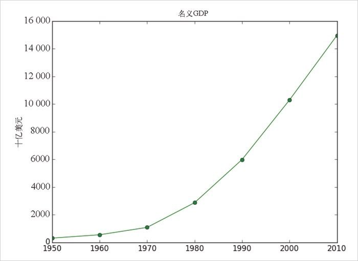

尽管我们并不会用到 matplotlib 太多的功能，但它着实能够制作出复杂的图中图、精致的图形格式和交互图形。如果你想做得比本书更深入，请查阅它的文档。
尽管我们并不会用到 matplotlib 太多的功能，但它着实能够制作出复杂的图中图、精致的图形格式和交互图形。如果你想做得比本书更深入，请查阅它的文档。3.1 matplotlib
有许多工具可以用来可视化数据，我们将使用的是应用最广的 matplotlib 库（尽管这暴露了它的年龄。详见 http://matplotlib.org/ ）。如果你的兴趣是制作用于网络的精良的交互可视化，它可能不是好的选择，但对于条形图、线图和散点图这些简单的图形来说，它很好用。
特别地，我们会使用 matplotlib.pyplot 模块。在最简单的应用中，pyplot 保持着一种内部状态，你可以在其中一步步地创建可视化。一旦创建工作完成，就可以保存（用 savefig() ）或显示（用 show() ）你的图形。
例如，制作一个（就像图 3-1 这样）非常简单的图形，就可以采取以下步骤：
from matplotlib import pyplot as plt
years = [1950, 1960, 1970, 1980, 1990, 2000, 2010]
gdp = [300.2, 543.3, 1075.9, 2862.5, 5979.6, 10289.7, 14958.3]
# 创建一幅线图，x轴是年份，y轴是gdp
plt.plot(years, gdp, color='green', marker='o', linestyle='solid')
# 添加一个标题
plt.title("名义GDP")
# 给y轴加标记
plt.ylabel("十亿美元")
plt.show()

图 3-1：一个简单的线图
制作出版级别的精良图片要更加复杂，本章不作深入探讨。对图形进行自定义的方式有多种，如坐标轴标记、线型以及点的形状等。我们并不会面面俱到地讲解这些参数，只会在我们的例子中提到（并关注）其中的一些。